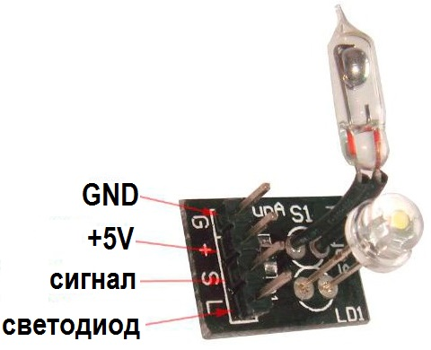
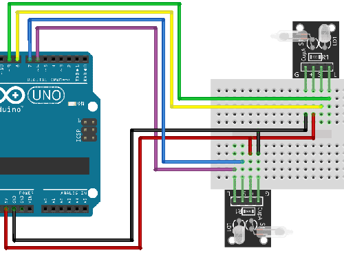

Модуль ртутного датчика наклона KY-027
Модуль KY-027 применяется в системах контроля и безопасности. Модуль датчика наклона можно установить на крышках, дверцах, люках, закрывающих доступ в контролируемое пространство. Зарегистрировать малые углы наклона с его помощью нельзя.
Корпус датчика размещенного на плате представляет собой колбу из стекла. Внутри колбы расположены два электрода и ртутный шарик. Электроды расположены рядом, ближе к торцу колбы. При наклоне в сторону электродов шарик скатывается и замыкает их. При наклоне в противоположную сторону шарик перемещается на противоположный конец колбы, освобождая и размыкая электроды.
Если назначение KY-027 в схеме – соединение линий при срабатывании датчика наклона, то для подключения используется только 2 провода, соединенные с контактами “S” и “-“. Кроме простого замыкания контактов модуль датчика наклона KY-027 позволяет обеспечить высокий уровень выхода в режиме ожидания. При этом на соответствующий контакт подается питание и для подключения используется уже 3 провода.

Технические характеристики модуля KY-027:
- напряжение питания — 5 В;
- резистор — 10 кОм.
- размеры (длина × ширина) — 12,5 × 15 мм;
Назначение выводов представлено в таблице 1.
Таблица 1
| Контакт | Назначение |
|---|---|
| L | Светодиод |
| S | Выход. Уровень сигнала на нем зависит от положения модуля при работе под питанием. |
| + | +5В |
| GND | Общий (GND) |
